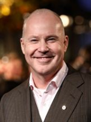

O filme Animais Fantásticos e Onde Habitam faz parte do mesmo universo da tão famosa saga Harry Potter, e narra a história de um magizoologista (mago especialista em animais) que possui uma maleta cheia de animais mágicos e que em uma viagem a Nova York acaba deixando-os escapar e com suas habilidades precisa recuperá-los. O filme faz parte de uma trilogia e tem como filmes sucessores: Animais Fantásticos os Crimes de Grindewald e Animais Fantásticos Os Segredos de Dumbledore.

David Yates nasceu em 8 de outubro de 1963 no Reino Unido.
Já dirigiu diversos outros filmes de fantasia como: A Lenda de Tarzam, toda a saga Harry Potter juntamente com outros diretores e até romances como: A Garota do Café e outros.
O filme estreou em 17 de novembro de 2016 no Brasil
e em 18 de novembro de 2016 no Reino Unido e Estados Unidos.
A franquia Animais Fantásticos possui outros dois filmes.
São eles: